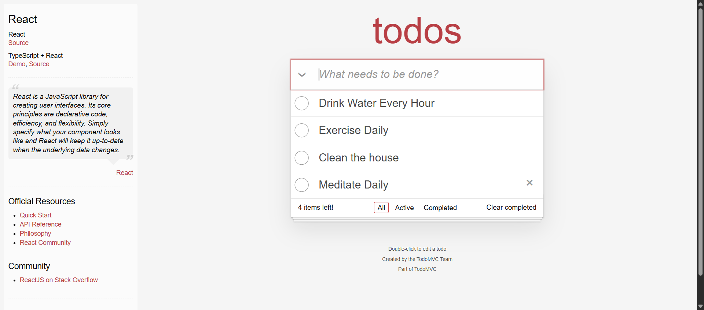

Started
May 26, 2025 08:25:32 pm
Ended
May 26, 2025 08:25:48 pm
Features Passed
0
Features Failed
1
Features
Scenarios
Steps
Timeline
System/Environment
| Name | Value |
|---|---|
| user | QA AUTOMATION |
| build | 0.1.1 |
| os | Windows |
-
Feature to verify the different ToDo functionalities
8:25:33 pm / 00:00:14:805 Fail
Feature to verify the different ToDo functionalities
05.26.2025 8:25:33 pm 05.26.2025 8:25:48 pm 00:00:14:805 · #test-id=1PassTS01 - Add to-do is working. (Add the below items, verify if the items are added and also the counter on the bottom left)When I add all four items to the todo listItems added successfullySteps.Hooks.afterStep()Screenshot taken!Then I should see all four items in the listToDo: Drink Water Every Hour is presentToDo: Exercise Daily is presentToDo: Clean the house is presentToDo: Meditate Daily is presentSteps.Hooks.afterStep()Screenshot taken!And I should see the number of items in the left bottom counterItems counts matched: 4Steps.Hooks.afterStep()Screenshot taken! FailTS02 - Mark Completed (Verify if the items are crossed out and verify the counter on the bottom-left)When I complete the todosNot completedSteps.Hooks.afterStep()Then those todos should be striked outStep skippedAnd I should see the number of items in the left bottom counterStep skipped
FailTS02 - Mark Completed (Verify if the items are crossed out and verify the counter on the bottom-left)When I complete the todosNot completedSteps.Hooks.afterStep()Then those todos should be striked outStep skippedAnd I should see the number of items in the left bottom counterStep skipped
-
org.openqa.selenium.remote.UnreachableBrowserException
1 tests
org.openqa.selenium.remote.UnreachableBrowserException
1 failedStatus Timestamp TestName Fail 20:25:48 pm Steps.Hooks.afterStep() Feature to verify the different ToDo functionalities.TS02 - Mark Completed (Verify if the items are crossed out and verify the counter on the bottom-left).Steps.Hooks.afterStep() -
java.lang.AssertionError
1 tests
java.lang.AssertionError
1 failedStatus Timestamp TestName Fail 20:25:37 pm When I complete the todos Feature to verify the different ToDo functionalities.TS02 - Mark Completed (Verify if the items are crossed out and verify the counter on the bottom-left).When I complete the todos